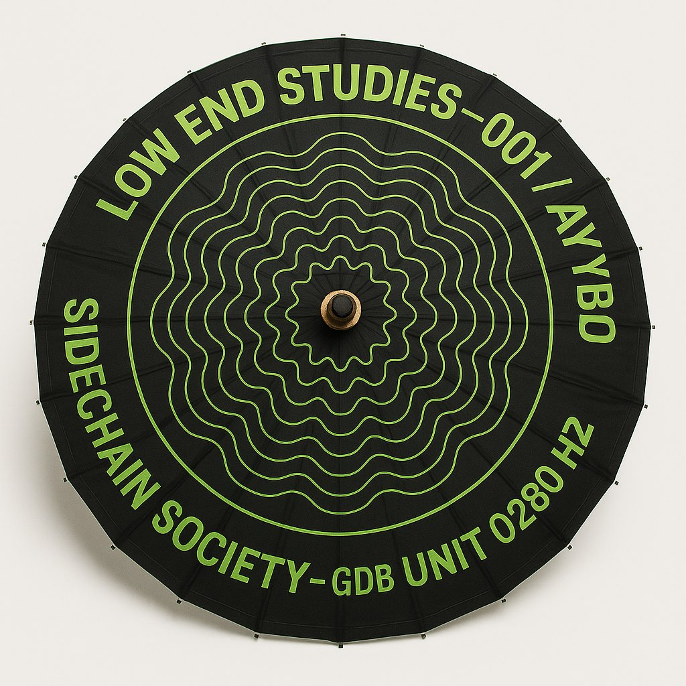
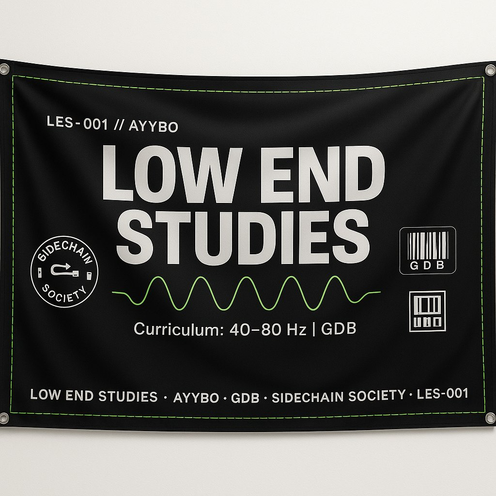
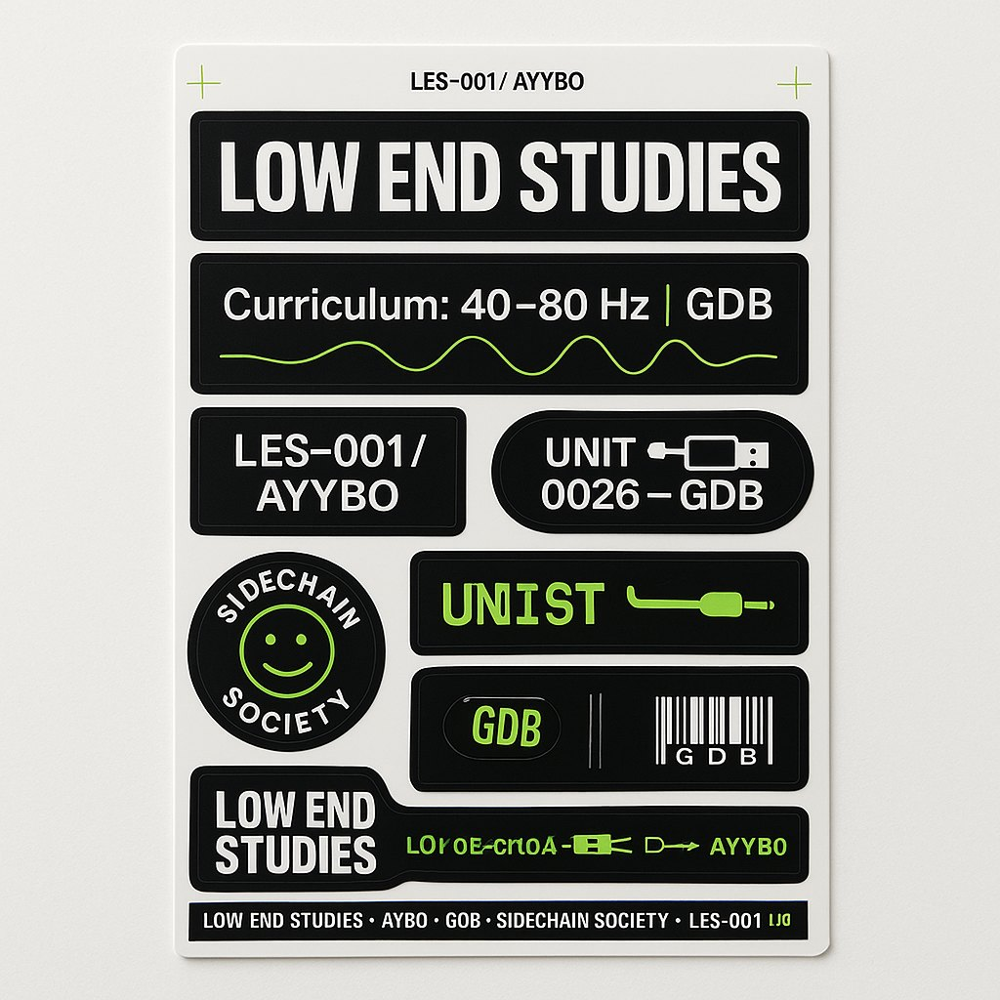
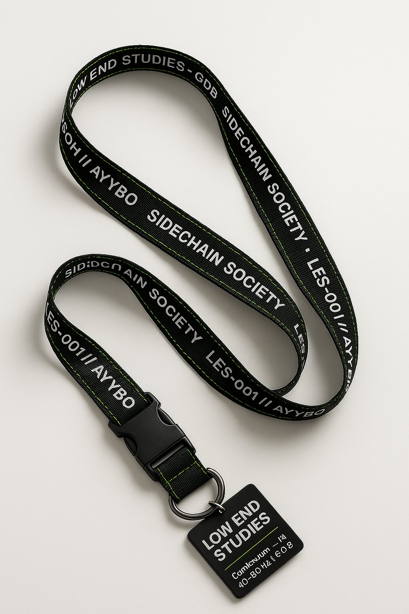

SCHOOL / LES · EST. GDB-000
LOW
END
STUDIES
Bass pressure. Deep frequency. Groove you can measure with your rib cage.
40–80 HZSUB PRESSURETHE BASSLINE STRUTSDEAN'S LISTLOW END BANGER
Curriculum
Course load.
Core studies in the part of the record that makes the room physically change.
LES-101
40–80
Bassline Fundamentals
The history, theory and practice of the bassline across genres and generations.
LES-220 · Sub Pressure
Weight, headroom, translation and why louder is not the same as heavier.
LES-260 · The Bassline Struts
Swagger, movement and the line between groove and posture.
LES-404 · Final Boss Seminar
When the room has fully crossed over.
Department archive
Published artifacts.
The existing LES drop becomes the school archive instead of being replaced.







